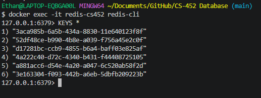

Redis Work Queue: Concurrency, Notifications, Logging
How the system works
A Flask web server accepts an image, and a separate worker process classifies it with ResNet50. The two processes never talk to each other directly. Redis sits between them: a list is the work queue, and a string key named after a random UUID is the "return address" for the answer.
{id, image} onto the queue. ③ A worker pops a batch. ④ The worker writes each result to a key named with the UUID. ⑤ Redis notifies the waiting web server, which reads and deletes the result. ⑥ The web server returns JSON to the client.1. Redis key structure
| Key | Type | Value | Written by |
|---|---|---|---|
image_queue | list (FIFO: RPUSH in, LPOP out) | One JSON string per request: {"id": "<uuid4>", "image": "<base64>"} | web server |
<uuid>e.g. 8e029f38-… | string | JSON list of the top 5 predictions: [{"label": …, "probability": …}, …] | worker |
The user's image is in the "image" field of a queue item. It's the preprocessed NumPy array (float32, shape 1×224×224×3, 602,112 bytes), base64-encoded so it fits in JSON. That comes to about 803 KB per queued image, which is why a free 30 MB Redis database only holds about 30 at once. The result comes back in the key named after the request's UUID.
2. Web server ↔ worker communication
The web server makes up a UUID, pushes the job, and keeps the HTTP request open until a result shows up under that UUID. Here is the original polling version, captured with MONITOR:
815.056 web RPUSH image_queue {id, image} hand off the work
815.066 web GET 8e02 → nil start polling
815.085 worker LRANGE image_queue 0 31 read up to 32 items
web GET 8e02 ×8, all nil still waiting (every 0.25 s)
817.163 worker SET 8e02 [{"label": "church" …}] write the result
817.165 worker LTRIM image_queue 1 -1 remove the processed item
817.333 web GET 8e02 → result found it
817.334 web DEL 8e02 clean up
Both sides poll. The worker runs LRANGE every 0.25 s even when idle (about 14,400 empty commands an hour), and each waiting request runs GET 4 times a second. The Flask handler thread blocks in that loop, so the HTTP connection stays open until the result arrives.
3. Model output for castle_image.jpg
| # | Label | Probability |
|---|---|---|
| 1 | church | 0.4136 |
| 2 | castle | 0.3930 |
| 3 | monastery | 0.1733 |
| 4 | palace | 0.0041 |
| 5 | vault | 0.0034 |
4. Concurrency: the two-worker bug
The original worker reads the queue with LRANGE, which removes nothing. It runs ResNet for about 1–2 s and only then removes items with LTRIM image_queue N -1, meaning "delete the first N items." That's two separate commands with a gap between them, and LTRIM deletes by position, not by which items this worker actually processed. With two workers:
| Step | Queue | Worker A | Worker B |
|---|---|---|---|
| 1 | 123 | LRANGE → 1 2 3 |
LRANGE → 1 2 3 same items |
| 2 | 1234567 4–7 arrive meanwhile |
running ResNet… | running ResNet… |
| 3 | 4567 | SET 1,2,3 · LTRIM 3 -1 |
|
| 4 | 4567 | SET 1,2,3 again orphan keysLTRIM 3 -1 deletes 4, 5, 6 lost |
Symptom 1: lost requests
With 2 workers and 20 requests (SLEEP_COUNT = 0.2), threads 10, 13, 17 and 19 never returned. The queue was empty, but MONITOR showed the web server polling 4 UUIDs forever, 12 GETs each in 3 s. Those images had been trimmed away unprocessed.
Symptom 2: orphan result keys
Worker A SET a result, and the web server read it and DELeted it. Then worker B SET it again, and nobody was left to read it.

The fix: an atomic pop
Redis runs commands one at a time on a single thread, so every single command is atomic. LPOP with a count reads and removes up to 32 items in one step. Two workers can never get the same item, and nothing is removed that nobody took.
- queue = db.lrange(settings.IMAGE_QUEUE, 0, settings.BATCH_SIZE - 1)
+ queue = db.lpop(settings.IMAGE_QUEUE, settings.BATCH_SIZE) or []
...
- db.ltrim(settings.IMAGE_QUEUE, len(imageIDs), -1)lpop returns None on an empty queue. My first version handled that with if queue is None: continue, but continue skipped the sleep at the bottom of the loop, which turned the worker into a busy loop sending thousands of LPOPs a second. or [] lets the empty case fall through to the normal sleep.
result With 2 workers, every stress test run returned 20/20, and KEYS * was empty afterward.
Are multiple web servers safe?
Yes. A web server only does RPUSH (a single atomic command) and GET/DEL on its own UUID key. Web servers share nothing with each other except Redis and never touch each other's keys, so there's no read-then-act gap. In practice they'd sit behind a load balancer.
Conflicting UUIDs?
Practically never. uuid4() has 122 random bits, so there are 2122 ≈ 5.3 × 1036 possible values. By the birthday problem, you'd need about 2.7 × 1018 IDs for a 50% chance of a single collision, which is about 86 years at a billion requests per second. The real risk would be a weak random source, but uuid4() uses the operating system's secure random generator (os.urandom).
Do notifications scale or conflict across web servers?
No conflicts. Each request subscribes to a channel named after its own UUID, so one server never receives another server's event. Scaling has costs:
notify-keyspace-events KEApublishes events for every change to every key, including all the queue traffic.PSUBSCRIBEis pattern matching, so Redis checks every event against every pattern subscriber: O(events × waiting requests). I used exactSUBSCRIBE, which is a hash lookup.- Each waiting request holds its own pub/sub connection. At scale, one subscriber per web server that hands events to the right waiting threads is better.
- Pub/sub is fire-and-forget: if nobody is subscribed when an event fires, it's lost.
A worker crashes after claiming an item
With LPOP, an item leaves the queue before the work is done, so a crash loses it (at-most-once delivery). A reliable queue fixes that:
- Claim atomically:
LMOVE image_queue processing LEFT RIGHT. "Copy, then pop" as two separate steps would recreate the original gap. - Acknowledge: after
SET-ing the result,LREM processing 1 <item>. - Recover: a monitor re-queues items that have been in
processinglonger than a timeout. Claim times go in a sorted set, scored by timestamp. - Production option: Redis Streams consumer groups have this built in (
XREADGROUP,XACK,XAUTOCLAIM).
A too-short timeout means a slow but still-running job gets run twice (at-least-once delivery). That's safe here because classification is idempotent: the same image writes the same result to the same key. Leftover results can expire on their own with SET key value EX 60.
5. Replacing polling with keyspace notifications
After CONFIG SET notify-keyspace-events KEA, every change to a key publishes a message on the channel __keyspace@0__:<key>. The web server subscribes to its own result key and waits on the socket instead of asking over and over.
GETs for one request, and about 240 in the 20-request stress test.GETs. Subscribing before RPUSH means the event can't fire before we're listening.p = db.pubsub()
p.subscribe(f"__keyspace@{settings.REDIS_DB}__:{k}") # subscribe BEFORE pushing
db.rpush(settings.IMAGE_QUEUE, json.dumps(d))
while True: # first message = subscribe confirmation
message = p.get_message(timeout=30.0)
if message is None or message["type"] == "message":
break
p.unsubscribe()
p.close()
# the event carries no data; this GET also catches a missed event
output = db.get(k)
if output is not None:
data["predictions"] = json.loads(output.decode("utf-8"))
db.delete(k)
data["success"] = True| Polling | Notifications | |
|---|---|---|
Empty GETs, one request | 9 | 0 |
Empty GETs, 20-request stress test | ~240 | 0 |
Delay from SET to the web server noticing | up to 250 ms (170 ms measured) | ~1.6 ms |
| Worker crashed | request hangs forever | 30 s timeout → success: false |
Missed notification or crashed worker? Pub/sub doesn't store events, so a missed one is gone. But the data lives in a key, not in the message. The single GET after the timeout still finds the result, so a missed notification costs latency, not correctness. If the worker crashed, the request times out instead of hanging. To make sure no work is lost, add the reliable queue above, and have the web server retry or resubmit after a timeout. Retrying is safe because classification is idempotent.
What's still left: the workers still poll with LPOP 4 times a second (BLPOP, a blocking pop, would fix that), and each request opens its own pub/sub connection (you can see a HELLO handshake per request in MONITOR).
6. Stress test fix
Each request thread is a daemon thread, and Python kills daemon threads as soon as the main thread ends. The original code kept the program alive with time.sleep(300), which is a guess. When I removed it, the program exited after about 1 s and printed nothing, even though the server still did all 20 classifications for clients that no longer existed. join() waits for each thread, so the program waits exactly as long as the slowest request.
threads = []
for i in range(0, NUM_REQUESTS):
t = Thread(target=call_predict_endpoint, args=(i,))
threads.append(t)
t.daemon = True
t.start()
time.sleep(SLEEP_COUNT)
for t in threads:
t.join()
time.sleep(300) # removedJoining every thread also made the Deliverable 4 bug visible. Without join(), the lost requests would simply have disappeared when the program exited.
7. Unified logging: a Redis logger
redis_logger.py gives every process the same log(action) function. Each entry is JSON with the timestamp, server (hostname:PID), main script name, and action. It prints locally and is pushed onto one shared Redis list, so the whole system reads as one timeline.
SERVER = f"{socket.gethostname()}:{os.getpid()}" # PID tells apart two workers on one machine
SCRIPT = os.path.basename(sys.argv[0])
def log(action):
entry = {"time": datetime.datetime.now().isoformat(timespec="milliseconds"),
"server": SERVER, "script": SCRIPT, "action": action}
# one write per entry, so lines from concurrent threads can't interleave
sys.stdout.write("[{time}] {server} {script}: {action}\n".format(**entry))
try:
pipe = db.pipeline() # one round trip, MULTI/EXEC
pipe.rpush(LOG_KEY, json.dumps(entry))
pipe.ltrim(LOG_KEY, -MAX_ENTRIES, -1) # keep only the newest 1000
pipe.execute()
except redis.RedisError as e: # logging never crashes the server
sys.stdout.write(f"[logger] could not write to Redis: {e}\n")python view_logs.py <uuid> follows one request across processes:
21:56:25.942 LAPTOP-EQBGA00L:4568 run_web_server.py queued 128b6406… 21:56:26.813 LAPTOP-EQBGA00L:9456 run_model_server.py batch of 8 21:56:29.075 LAPTOP-EQBGA00L:9456 run_model_server.py set 128b6406… 21:56:29.100 LAPTOP-EQBGA00L:4568 run_web_server.py done 128b6406…
- 20 queued, 20 done. Both workers share the load with no losses.
- Big batches can be slow. Worker
:9456took a batch of 8 and needed about 2.2 s. Meanwhile worker:8348finished four batches of 2 in about 0.2 s each, so those 8 requests waited while a worker was free. - The log is in arrival order, not event order.
done 128b6406(29.100) is stored after an entry stamped 29.112, because the timestamp is taken before theRPUSHand another thread's push got there first. Across machines with different clocks this gets worse.